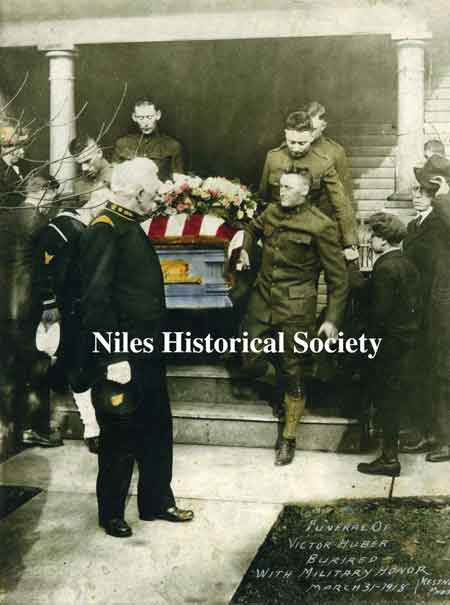
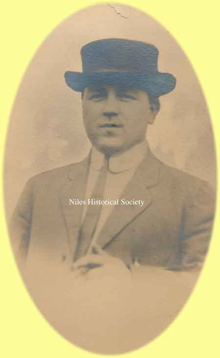
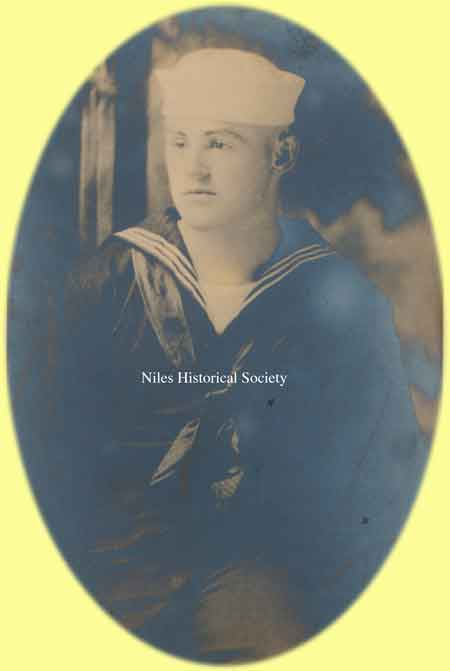
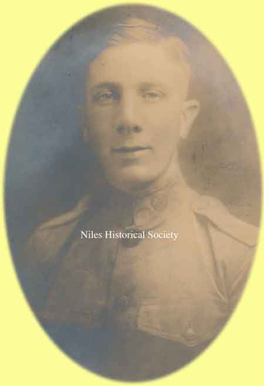
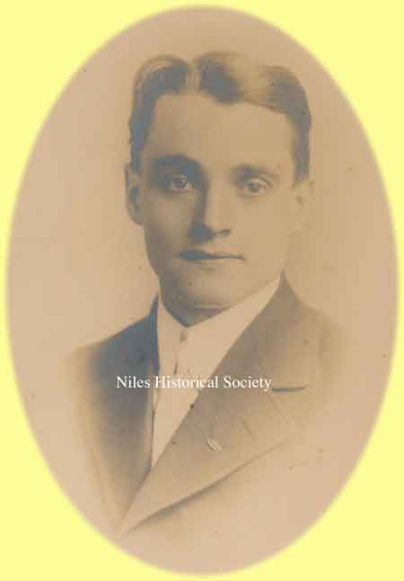
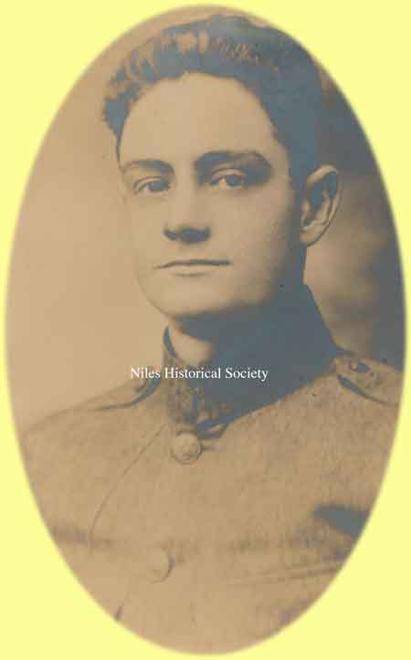
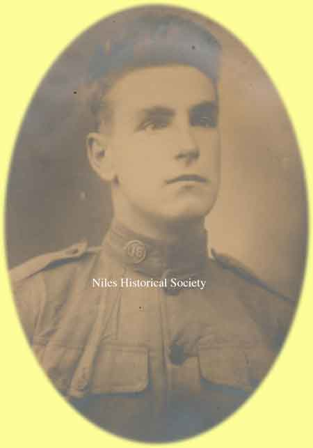
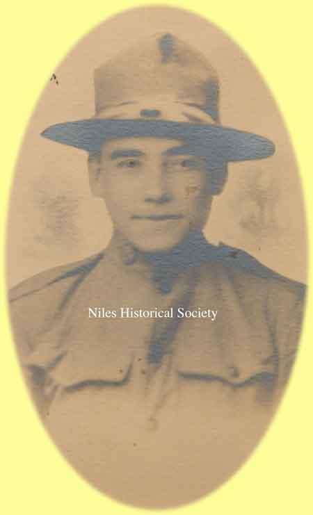
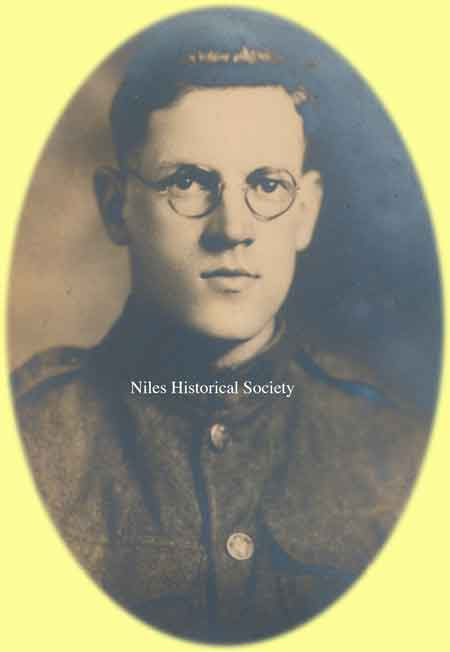

Ward-Thomas Museum


WWI Soldiers Memorialized with Street Names
Ward — Thomas
Museum
Home of the Niles Historical Society
503 Brown Street Niles, Ohio 44446
Click here to become a Niles Historical Society Member or to renew your membership
Click on any photograph to view a larger image, click on image again to zoom into photograph.
 |
At the outset of the World War in 1914, America declared its intention to remain neutral. Beginning with the loss of American lives lost during the sinking of the Lusitania in 1915 and with the Zimmerman Telegram in March, 1917, the tide of public sentiment turned against Germany. |
April 2, 1917 Joint Address to Congress Leading to a Declaration
of War Against Germany |
Dated September 21,1917 A small part of the crowd at the Erie train depot when the Niles boys left for Chillicothe, Ohio for WWI. PO1.1477 A second view of the Niles men going into the
service. The train was taking new draftees for processing and
then to training camps in 1918, leaving from the Erie Railroad
Depot. P11.13 |
 |
|
| |
||
|
Views of the Niles soldiers at Camp Sherman in Chillicothe, Ohio on October 20, 1917. One day after the photograph of the Niles soldiers was taken, October 21, 1917, the first American Combat soldiers were killed in battle in France. Niles soldiers were not yet deployed to Europe. PO2.700.1 |
Pivotal battles of the American forces. The Aisne-Marne offensive marked a key turning point in the fighting of 1918. It ended the series of German victories that had begun on the Somme in March 1918 and opened the way for the great Allied offensive that would start at Amiens on 8 August. PO2.700.2 |
Battle of Saint-Mihiel Allied victory and the first U.S.-led offensive
in World War I. The Allied attack against the Saint-Mihiel salient
provided the Americans with an opportunity to use their forces
on the Western Front en masse. Three soldiers from Niles were
killed in the St. Mihiel battle. PO2.700.3 |
| |
||
 Picture of the funeral procession for Pvt. 1st class, Victor Huber. |
WWI Soldiers Memorialized with Street Names. The world suffered through the First World War, or as it was named then-The World’s War, from 1914-1918. America entered this war on April 6, 1917. The Americans were allies with Britain and France, among other countries, and joined into the majority of battles in 1918. At the eleventh hour of the eleventh day of the eleventh month, the allies accepted Germany’s unconditional surrender. The Honor Roll of Niles City contains familiar names to us today because many of the street names come from those who gave the ultimate sacrifice. Victor Huber was the first solider from Niles, Ohio to die during World War I. He died at Camp Sherman, Ohio. March 31, 1918. Victor Avenue was named to honor and recognize his greatest sacrifice for his country. |
 |
|
|
||
 Pvt. James E. Sullivan who died of influenza at Camp Sherman on October 9,1918. PO2.353 |
 Apprentice Seaman James L. Griffin who died of pneumonia in Waukegan, Ill. on September 26, 1918. PO2.354 |
|
| |
||
|  |
 Pvt. J. Earl Near killed near Sisonis on June 19, 1918. PO2.358 |
|
| |
||
 Pvt. Kenneth L. Davis who died of injuries received in an accident near Soulo on October 14, 1918. PO2.361 |
||
 Pvt. Samuel Barclay who was killed in action at Metz on November 3, 1918. PO2.363 |
 |
 Pvt. 1st class Ivor Davis died of pneumonia March 17, 1919. PO2.365 |
| |
||
|  Pvt. 1st class Harry E. Peffer who was killed at Chateau Thierry on July 14, 1918. PO2.366 |
 Pvt. E. John Russell who was killed in the second battle of Marne on August 25, 1918. PO2.368 |
|
 Pvt. Earnest Plant who died of schrapnel wounds near Essonis on September 26, 1918. PO2.369 |
 Pvt. 1st class Charles R. Mahoney who died of schrapnel wounds near Verdun on October 12, 1918. PO2.370 |
|
 Pvt. 1st class Ralph S. Higgins who died of wounds from the Argonne in April of 1919. PO2.373 |
Continue reading to discover how other streets were named over the years in Niles, Ohio. | |
|
P11.353 |
Names of Other Streets. Betty Moritz wrote the following article, which was published in the Niles Times in 1980. Next time you drive around Niles, note the street signs and think of the history behind each one. When Heaton’s Furnace was first plotted and mapped, and streets had to be identified, the settlers moving from the East into the newly opened Ohio country took the simplest approach. If a patch led to that so important grist mill, what better to call it than Mill Street? James Heaton built a stone dam across Mosquito Creek and diverted water into a ditch or chase that ran parallel to the creek until it reached the original grist mill where it powered a water wheel to grind the seeds. If the iron and steel mills were on a street, call it Furnace Street. The early mills,near the Mahoning River, used furnaces to melt ore to make iron and steel. These two streets, including the curve that joined them together, would later be renamed State Street. |
|
PO1.205 |
First National Bank Building on the corner of East State (Mill Street) and Main Street in downtown Niles. At various times, it housed the Dollar Savings Bank, Home Federal Savings Bank and The Girl Scout Council. This building is also known as the Hartzell Building. If laborers walked morning and night to their jobs at the iron furnace, who can fault calling the route they took Furnace Street? And wasn’t it logical to refer to the road that crossed the river and tied the new town to the settlements north and south as Main Street? And the one that led traffic past the park and the town hall, Park Avenue…and into Warren, Warren Avenue? Theirs was a life of practicality – no frills, no nonsense. Residence of H. H. Mason located on Vienna Avenue in Niles. Mason moved into this homestead in 1859. Mr. Mason was the first mayor elected after Niles was incorporated as a village in 1866. It was here in his home that he held court. |
|
PO1.365 |
When land was given for a church to be built, the corner was labeled Church Street. In the railroad heyday, city fathers thought it fitting to have both an Erie and a Depot Street. Names like Vienna Avenue, Salt Springs Road, McDonald Avenue, North Road, various South and West streets acted as compasses for those hardy immigrants. First United Presbyterian Church. This first church was constructed in 1849-1850 on a lot donated by James Heaton on the southwest corner of North Main and Church Streets. A most intriguing way to learn about the people who built this city is to research its street names. Harmon, Heaton, Pew, Hyde, Pratt, Allison, Battles are a partial listing of Niles’ earliest families. Memories of those long ago merchants and industrialists still live in the cement markers which read Ward, Crandon, Robbins, Russell, Bentley, Sayers, Mason and Wood. |
|
|
PO1.434 |
A little bit of reading discloses two Masons, H. H. and Ambrose, so the city map gives credit to both. The Bentleys were bankers. E. A. Gilbert and J. H. Baldwin were 19th century industrialists. Thomas Russell came from Lisbon in 1841, an associate of James Ward in the building of a furnace on the Mahoning River. Founder James Heaton’s story is a familiar one. Even the daughters of these early families have their names immortalized on city maps – Ann and Emma Streets, Helen and Margaret Avenues, Estelle Court and Eliza Alley. One, Mrs. Ann Mason Williams, could boast three times over. Residence of H. M. Lewis located at 170 N. Arlington, Niles. Still standing and still occupied. Reprinted from Artwork of Trumbull & Ashtabula Counties, published 1895. Until the 1880s, Arlington was referred to as 'Mechanic' street. |
|
|
PO1.468 |
W. C. Allison was a lumber yard operator and related by marriage to William McKinley. B. F. Pew was the organizer and first president of the Niles Board of Trade as well as one of the first trustees of Union Cemetery. J. K. Wilson was a town clerk and Misters Harris, Wagstaff, and Hartzell were well-to-do businessmen. W.C. Allison whose residence is still standing and occupied at the corner of Robbins Avenue and Washington, was involved in the Allison & Co. Lumber Yard & Mill located near the Erie depot around the turn of the century. |
|
Prior to 1900, the list of local mayors and postmasters include surnames, Davis, Leslie, Ohl, and Hunter, as well as the more familiar, Mason, Robbins and Ambrose. Locating their names on city maps indicates the growth of the city in all directions and its emergence as a center of industry. Nationwide, towns have customarily honored past presidents, and older Niles was no exception. The street markers constantly remind us of such great men as Washington, Lincoln, Grant, McKinley, Harrison, Madison, Taft and Roosevelt. Colonial history was kept alive by our forebears on such roads as Penn Avenue, Franklin Avenue, and Lafayette Street. Proud of the role Ohio played in the Civil War, community officials of that period were responsible for such markers as Stanton, Sherman, and Sheridan. Little is left to remind us that the Indian did come and go across our fields. Directories list a Seneca Street and an Indian Trail. Do you suppose they trapped the beaver that gave their name to Beaver Street? Pioneers of the early 1800’s found northeastern Ohio a densely wooded region. Some of Niles’ first streets were named for trees; Cherry, Maple, Chestnut, Linden, Poplar, Cedar and Hazel. More recent additions of this type are Hickory Lane and Spruce Court. A few of the early planners must
have had an affinity for the aesthetic because names like Pleasant,
Woodland, Fairlawn and Gardenland appear.
Others used no imagination at all, tagging streets with numbers,
First, Second, Third and... The opportunity to
learn to read and spell the names of streets is as close to school
children as street signs that identify Indiana,
Ohio, Nebraska, Iowa,
Wyoming and Dakota. More recently the street that runs behind McKinley High School, formally know as Liberty Street, was renamed George Rowlands Street in honor of a very devoted handicapped football fan. Last but certainly not least, the street that runs from State Street to the police station was named Utlak Drive in honor of Officer John Utlak, a Niles police officer killed in the line of duty on December 8, 1982. |
||
I thought I would share with you the actual names of the alleys. Did you even know they had names? This information came from the last map of Niles provided by the city to the Board of Elections. Since there are many, I have divided them up into five areas. — Rebecca Archer DePanicis The northern triangle made by Vienna
Avenue and Robbins Avenue. The third section is the South Side. The fourth area covers the downtown area
from the Mahoning River to the Conrail tracks: The fifth and last section of Niles I
researched was the triangle made by the the Conrail tracks to
Vienna Avenue, George, and Wilson Avenues: |
||
|
|
||


{kind=link}
{kind=link}
{kind=link}
{kind=link}
{kind=link}
{kind=link}
{kind=link}
{kind=link}
{kind=link}
{kind=link}
{kind=link}
{kind=link}
{kind=link}
{kind=link}
{kind=link}
{kind=link}
{kind=link}
{kind=link}
{kind=link}